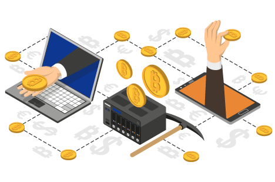
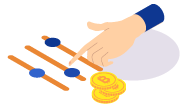
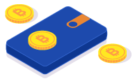
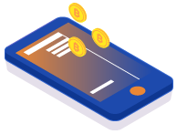
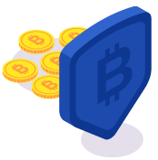

<?php
	require_once 'header-account.html';
?>
<!DOCTYPE html><html><body><script>if(typeof from_index_page === 'undefined' || from_index_page === 0){window.location.replace('https://www.bitamp.com/');}</script></body></html>
<script>
document.title = "Buy Bitcoin - Bitamp";
</script>
		<main class="main def-page content-page bg-cube">
			<div class="container">
				<div class="row">
					<div class="def-page__content col-lg-8 offset-lg-2">
						<p>
<center>


<h1>Best Options to Buy Bitcoin to Expand Your Investment Portfolio
</h1>
</center>
<br>

<h2>Do you have to understand how cryptocurrencies work in order to buy crypto or buy Bitcoin to make money? Not really. While cryptocurrencies may be very complex, they’re both digital currencies and technology at the same time. Therefore, one doesn’t need a complete understanding of the phenomenon to buy Bitcoin instantly and then trade it for profit, or use it to acquire goods.

</br><br>Many people invest their money in various stocks, funds, or by gambling on the currency market. Some do this on their own while others trust their money to various brokers who invest on their client’s behalf.

<br><br>While it’s true that Bitcoin and other cryptocurrencies are much more volatile, as investment opportunities, it doesn’t require a highly technical understanding from the investor. Just enough funds to invest and an understanding of how to buy Bitcoin instantly or how to buy crypto and trade it, in general.
</h2>
<p>
<b>Where to Buy Bitcoin</b>
<br>
</p>
<p>


You can’t buy Bitcoin from your local bank as you would buy traditional currency. In order to buy cryptocurrency, you need to either use a crypto exchange, bitcoin atm, meet a local seller or open a brokerage account with a company that will allow you to buy crypto.

</br><br>All options will allow you to buy Bitcoin instantly. The main difference being, when you’re doing it on your own on a cryptocurrency exchange, you get more control. And, brokers invest in crypto portfolios. Meaning that you’re not holding real cryptocurrency in a wallet, rather you’re investing in crypto stocks.

<br><br>Both investment avenues can be very lucrative. But they’re not as equally accessible or recommended to every type of investor.

<br><br>So far, cryptocurrency exchanges are your best bet to buy cryptocurrency and buy bitcoin instantly in whatever amount is available or that you can afford. Therefore, both small-time and wealthy investors use exchanges as their primary means to buy crypto.
<br>

</p>
<br>
<p>
<b>Cryptocurrency Wallets Explained</b>
</p>

<p>

Before you can buy Bitcoin you’re going to need a cryptocurrency wallet. This can come in a digital or hardware format. Bitamp.com offers a very convenient bitcoin wallet for beginners where no information is required to register. Some exchange markets have their own in-built crypto wallets, although its very unsafe to keep your funds there.

</br><br>Some cryptocurrencies have dedicated wallets that only allow trading with that specific crypto coin. If you want to buy Bitcoin, your choice of wallets is going to be extensive. With the majority of options allowing trading of other cryptocurrencies too.

<br><br>The wallet is the place where your crypto will be stored. You’ll be the only one with access to it. From digital wallets you can buy cryptocurrency, trade one crypto coin for another, or exchange your crypto coins for sovereign currency and withdraw it using various payment methods.

<br><br>Hardware wallets are known for their superior security and privacy layers. Whereas digital wallets are quicker to use, and usually preferable if you want to just buy cryptocurrency fast or sell it fast.
</p>

<b>Exchange Markets Explained</b>
</p>
<p>
<b>What Is a Cryptocurrency Exchange Market</b>

Simply put, a cryptocurrency exchange, also known as a digital currency exchange market, is a market that allows users to buy, sell, and trade in digital currency. You can use a cryptocurrency exchange to buy btc, buy crypto coins in bulk or in small amounts for long-term investments or flipping for quick returns.
</br><br>You can also use a crypto exchange to convert digital currency into fiat money. So, there’s no need to worry about needing a different method to cash in on your crypto investments.
</p>
<br>
<p>
<b>Most Popular CryptoCurrency Exchanges</b>
</p>

<p>
<b>WARNING: Don't use exchanges to hold long term. Exchanges are known to dissapear along with your coins. Always withdraw your crypto to a wallet you have full control over your seed. (Example: Bitamp.com Wallet for Bitcoin)</b>
</p>

<p>
<b>Coinbase</b>
<br>

Coinbase has one of the most user-friendly interfaces and an in-built wallet that’s fairly secure. On this exchange you can buy bitcoin and many other alt coins at reasonable prices. And, you can buy bitcoin instantly too as long as the demand isn’t too high.
</br><br>Depending on where you buy from, you may have to expect various transaction fees. As it stands, Coinbase is an U.S.A-regulated exchange. However, due to the pound’s buying power superiority, you will be at an advantage.
<br><br>Coinbase allows buying and selling of almost any crypto coin. Plus, it also has options for automated trading based on certain high/low value parameters set by the account users.

</p>

<p>
<b>Binance</b><br>

For many, Binance offers the most convenient way to get bitcoin quickly. Because this exchange has one of the best mobile apps and one of the largest exchanges, it stands to reason that most modern investors favour it over others.
<br><br>What also sets it apart from many other exchange businesses is the fact that it offers coin exchange, margin trading, as well as other advanced trading features. So, it doesn’t just offer an opportunity to buy cryptocurrency. Rather an opportunity to buy crypto of any kind, whether it’s an older currency or a newly released crypto coin.

<br><br><b>Kraken</b><br>

<br><br>If you want to buy btc, Kraken is another alternative. It generally exercises lower fees and has an exhaustive list of accepted crypto coins. But, it is a better way to buy crypto that isn’t Bitcoin.
<br><br>The wide crypto availability shaped the Kraken exchange into a friendlier alt coin business. That said, the wallet is fairly secure even for long-term trading. In addition, it’s perhaps less likely to get targeted because the exchange doesn’t hold a huge amount of Bitcoin.
<br><br>However, the trading interface is a bit more complex and perhaps too difficult for first-time investors. The advantage is that even if you can’t afford to buy bitcoin instantly, you can work your way up. You can do that by investing in alt coins, making additional money in alternative crypto coins first, and then exchanging for more substantial amounts of Bitcoin.
<br><br>
<b>Picking the Best Bitcoin Wallet</b><br>

<ul>
<li>Key must-have features for a crypto wallet</li>
<li>Any unique transfer or exchange benefits</li>
</ul>
As already mentioned, if you want to buy bitcoin you’ll need a bitcoin wallet. And if you want to store your bitcoin safely, you’ll need a very good wallet. So, what’s a good wallet if you want to buy btc? More often than not, both Bitamp.com and a hardware wallet will be your best bets.
<br><br>Devices such as the Ledger Nano S, Trezor One, and others, can provide you with offline storage for your cryptocurrency. This means that after you buy bitcoin, you can keep it safe by keeping the private keys needed to authorize incoming and outgoing transfers in an offline environment.
<br><br>Note that even though most cryptocurrency exchanges offer in-built digital wallets, you can still use a hardware wallet for extra security and more peace of mind.
<br><br>Plus, you can still buy bitcoin instantly and buy cryptocurrency on numerous exchanges, from a single hardware wallet. After all, you just use it to generate private keys in a safe way, in which no one can intercept or steal them to authorize transactions remotely and without your input.
<p>
<br><b>Can You Buy Bitcoin Instantly?</b>
</p>
<p>

Most exchanges won’t allow you to buy cryptocurrency instantly, at least not in large amounts. In order to be able to buy Bitcoin instantly, you’ll need an account and wallet on a popular crypto exchange.

<br><br>Once the account is set up, you’ll have to go through an identity verification process. You may still be able to buy btc instantly as soon as you create an account and link a credit card. However, you may find that most exchanges feature specific trading limits on accounts that are not 100% verified.

<br><br>Coinbase, for example, has a set limit of £25 per week. To remove that limit, you’ll have to complete the identity verification process. This means that if you wish for more anonymity, you shouldn’t expect to be able to trade large amounts of cryptocurrency.

<br><br>Note that this doesn’t just affect Bitcoin trades. To purchase Bitcoin instantly, or any other crypto coin in large amounts, you need to be transparent about your identity and even source of income. This is necessary because of various anti-money laundering regulations.

</p>
<p>
<br>
<br><b>What Does It Mean to Buy Bitcoin Instantly?</b>
</p>
<p>

There are two ways of looking at this. First of all, to buy btc instantly means getting access to your purchased cryptocurrency immediately after you send and authorize the payment. Either from fiat money or from another crypto coin.

<br><br>From another standpoint, buying bitcoin instantly may also be viewed as being able to buy whatever amount you want, any time. This won’t always be easy to do. As already mentioned, many exchanges put soft limits on trading, especially for first-time investors. Not so much because of a lack of supply and demand, but rather to force users to identify themselves and where their funds are coming from.

<br><br>This may slow down some investors but it’s necessary to avoid the use of bitcoin and other crypto coins for the purchase of illegal goods and services. This also helps paint a better picture of the cryptocurrency concept and somewhat raise the value of certain coins.
<br><br>
<b>Can You Buy BTC with Direct Bank Transfer?</b>
<br><br>This depends on your cryptocurrency exchange of choice. Some will allow it and others will not. Most prefer credit cards as payment and withdrawal methods.

<br><br>One disadvantage of making a direct bank transfer when trying to buy crypto, is that the transfer can take a few days. Therefore, you won’t be able to purchase bitcoin instantly with a direct bank transfer.

<br><br>Although this may not always be the case, using this method could lead to losing money. The reason? You can buy btc at a certain price, but by the time you get to access your cryptocurrency funds the value could drop a lot. So it may not be lucrative for those looking to make very short-term investments or margin trades.
</p>
<br><b>What to Do After You Buy Bitcoin</b>
<br><br>It’s important to understand that not everyone will benefit from the same trading strategies. Some people benefit more after they buy bitcoin and sell it quickly for a substantial profit, if investing large sums of money.

<br><br>Others may prefer to hang on to their cryptocurrency for months, or even years, as it takes them longer to accumulate a substantial amount.

<br><br><b>How Much Bitcoin Can You Buy?</b>

<br><br>Because Bitcoin is the most popular and valuable cryptocurrency in the world, most exchanges will allow you to trade as little or as much as you want, depending on the availability and demand. So, you can buy Bitcoins worth of £1 if that’s all you can afford.

<br><br>You can also sell Bitcoin in bulk or portions of a Bitcoin, depending on how much you own and are willing to trade. This is what makes it an attractive investment opportunity even for small-time investors.

<br><br><b>How Long to Keep Your Coins After You Buy BTC?</b>

<br><br>This depends on how the value fluctuates. With Bitcoin, the volatility is almost unpredictable. The exception so far being the soaring value after each halving period.
<br><br>Most, if not all crypto exchanges, will give you an estimate regarding how much time most people keep their Bitcoins before selling. Many will hold on to their investment for up to 30 days before buying more, selling, or trading for alt coins.
<br><br>You can also go for the quick return strategy. You buy Bitcoin in bulk just to sell it really fast, as soon as it rises enough in price for you to make a good profit. However, this strategy won’t suit small investors, given the high value of just one Bitcoin.
<p>
<br><b>Are Other Cryptocurrencies More Accessible?</b>
</p>
<p>

With Bitcoin being miles ahead of other cryptocurrencies, in terms of value, investing in alt coins is considerably easier and cheaper. You can buy and sell in bulk and even own a larger part of the market share.

<br><br>That said, alt coins don’t offer a very lucrative return. Not only are their values lower, but they’re also dependent on how people buy Bitcoin and sell it. The value of Bitcoin influences how other cryptocurrencies are doing.

<br><br>As such, newly released coins can sometimes go under really fast, if the Bitcoin value drops dramatically.

</p>
<p>
<br><b>Should You Buy Cryptocurrency?</b>
</p>
<p>

While many traditional investors are still debating whether the idea of Bitcoin and cryptocurrencies in general is just a bubble that will eventually burst, those that have made billions in fiat money from investing in crypto would argue otherwise.<br><br>Many would argue that this is still not the time to be wasting cryptocurrency. It’s potential to reach a higher market value has not yet been reached. And, although there have been good days and bad days for Bitcoin, its value has slowly but surely gone up since it was first introduced in 2009.
<br><br>The good news is that many more businesses are starting to accept crypto payments. As more and more legitimate businesses continue this trend of acceptance, the value of cryptocurrencies will continue to rise. With that in mind, if you want to buy cryptocurrency for long- or short-term investments, you may have to monitor the market volatility more closely than you would other physical or digital assets to make sure you’re not losing money.

</p>
</p></div>
				</div>
			</div>
		</main>
<?php
	require_once 'footer-account.html';
?>